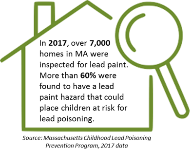
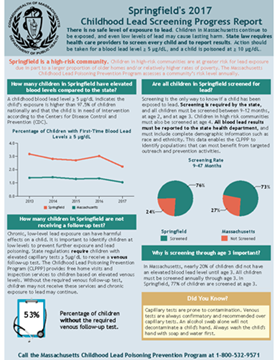
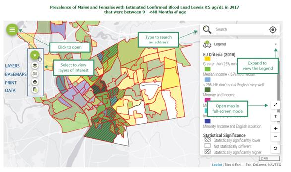

A Newsletter of the Massachusetts Department of Public Health Bureau of Climate and Environmental Health Environmental Public Health Tracking Program |
|||
|
2019 Volume 2, Issue 2 News and Updates
Featured Topic: Childhood Lead PoisoningLead is a naturally occurring metal; however, if it accumulates in the body, it can cause many different problems for both children and adults. There is no safe level of exposure to lead. Some people are at a greater risk of exposure than others. Lead can hurt the brain, kidneys, and nervous system; slow down growth and development; make learning harder; damage hearing and speech; and cause behavioral problems. In Massachusetts, children are most often exposed to lead by ingesting dust or soil contaminated by loose or deteriorated lead paint or lead paint disturbed by unsafe renovation work in their homes. Children under the age of 6 are more at risk from higher lead levels because they absorb lead more easily than adults. Children also put objects and their hands in their mouth, which is a common way lead exposure can occur. Massachusetts has the fourth oldest housing stock in the country. Approximately 71% of Massachusetts' housing was built before 1978 - the year lead was banned in residential paint. While lead continues to affect children in all communities across the Commonwealth, data collected by the Massachusetts Department of Public Health Childhood Lead Poisoning Prevention Program (CLPPP) show that lead exposure disproportionately impacts lower income communities and communities of color, making lead exposure a critical health equity issue. All children in Massachusetts are required by law to be screened and have their blood tested for lead, to prevent negative health outcomes from lead exposure. Massachusetts' Lead LawMassachusetts has a Lead Law that helps prevent and eliminate exposure. The law requires homes built before 1978 to be free from lead hazards if a child under the age of six resides there. On December 1, 2017 the CLPPP amended its regulations and lowered the blood lead level for the regulatory definition of Lead Poisoning, established a new Blood Lead Level of Concern category, and instituted additional screening guidelines for these blood lead levels. The regulation also updated the deleading requirements. More specific resources about these changes are available for: parents, healthcare providers, property owners, and contractors.
Ways to Reduce Lead ExposureCall the CLPPP at (800) 532-9571 or visit the CLPPP website for lead resources in different languages, to look up the inspection history of your home, review a list of licensed lead inspectors, and find information on the types of deleading that a homeowner can perform. Financial assistance is available to help qualifying homeowners with deleading. Until your home is deleaded, learn about short-term steps that can keep your child safe and foods that can reduce lead absorption. Explore Community Lead Screening Progress Reports Did you know there is a Lead Screening Progress Report for all 351 cities and towns in MA? This Report is an easy-to-use tool that offers a snapshot of lead data specific for your community. This annual report is designed to help providers understand their role in preventing lead exposure. It highlights areas of needed improvement in screening and follow-up and raises awareness of key educational messages to promote primary prevention. Public health professionals also play a critical role in identifying lead hazards and providing education to parents and building owners. The Lead Screening Progress Report includes information about the dangers of low-level lead exposure and a community's high-risk status that public health professionals can use to inform outreach activities. Lead Queries on EPHTFor a deeper dive into available lead data, you can visit the MA Environmental Public Health Tracking (EPHT) Childhood Lead Poisoning webpage and explore maps and data tables for information on childhood lead screening percentages and blood lead level prevalence rates. Looking at statistically significantly elevated blood lead level and screening statistics together with environmental justice criteria can guide interventions for at-risk communities. |
|||
|
 Content update: Check out the
Content update: Check out the  Data update: New data are available for
Data update: New data are available for  Event update: Follow
Event update: Follow